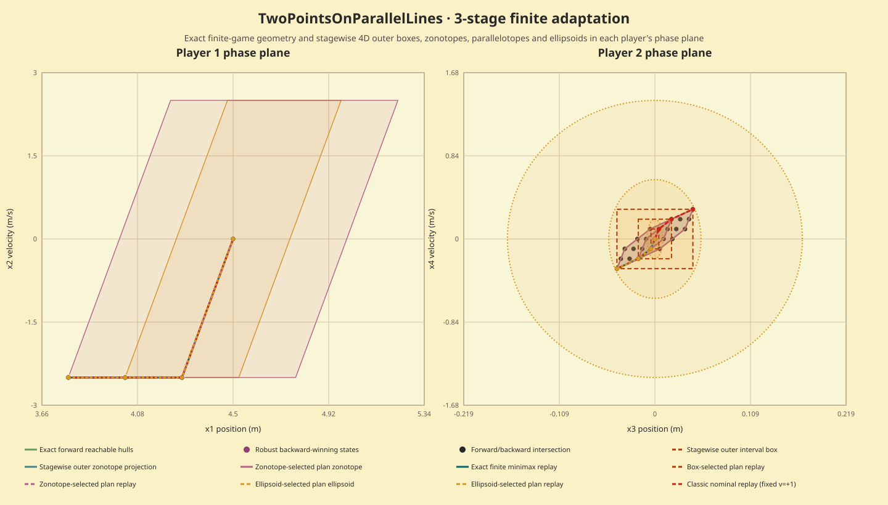

This finite three-stage adaptation of the differential-game RL environment uses state (x1,x2,x3,x4)=(position₁,velocity₁,position₂,velocity₂), initial state (4.5,0,0,0), and controls {-2.5,0,2.5}. Classic nominal control fixes the opponent input to v=+1 at every stage. It is not a reproduction of the source continuous-action, 10-second RL task.
The exact nominal finite-catalog objective is 13.92409225. The separately computed exact finite minimax value is 14.58094225, under opponent disturbances {-1,0,+1} at each stage. These use different disturbance semantics and are not a direct performance or robustness comparison.

| Track | Candidate score | Objective-bound evidence | Selected replay objective | Selected action indices |
|---|---|---|---|---|
| exact_polytope | 13.924092250000 | finite-catalog minimum (binary64) | 13.924092250000 | 0, 0, 0 |
| box | 13.924092250000 | none certified | 13.924092250000 | 0, 0, 0 |
| zonotope | 13.924092250000 | none certified | 13.924092250000 | 0, 0, 0 |
| parallelotope | 13.924092250000 | none certified | 13.924092250000 | 0, 0, 0 |
| ellipsoid | 13.924092250001 | none certified | 13.924092250000 | 0, 0, 0 |
The exact track selects the lowest numerical deterministic objective among the enumerated finite catalog; this is a numerical finite-catalog result, not a validated real-arithmetic certificate. Approximation tracks rank plans using floating-point outer-enclosure scores. These scores are ranking estimates only: they provide no certified lower or upper objective bound. Each selected action sequence is separately replayed from the authored state and fixed opponent inputs. The independent checker uses exact rational arithmetic to reconstruct all nominal plans, verify all five score tables and selected traces, and recompute all 27×27 finite minimax histories.
One excluded warmup followed by seven batches of ten API calls measured all five nominal tracks at once. Median call time was 20.752 ms (range 19.575–26.473 ms; 70 measured calls, zero failures). Each timer surrounds one native nominal API call, including all five tracks and selected-path replays; caller status checks and score consumption happen after timing. Fixture setup, finite-minimax reference, serialization, independent checking, build, and rendering are excluded. This is descriptive for one fixture and host. No limiter profile or comparative performance claim is made.
The figure overlays the nominal trajectory on saved minimax forward/backward sets, intersections, outer approximations, and selected minimax paths in (x1,x2) and (x3,x4). Raw result · Independent check · Source/build capture · Figure data · Reproduction and limits